Contents
- Introduction
- Prerequisites
- Git Configuration
- Aliases
- Git Command Line Interface (CLI)
- Create a Repository
- Clone
- Create 'origin' and 'upstream' Links
- View Repository Status
- Modify, Add, Commit
- Reset
- Push Changes to Your Public Fork
- Fetch, Merge, Pull
- Create Branch
- Delete Branch
- Switch Branch and Merge
- Rebasing
- Stashing
- Setting Up Remote Branches
- Ignore Whitespace in Merges
- Set Tracked Files to Not Be Committed
- Notifications - Web or Email
- For Further Reading
Introduction
This module takes a look at Git commands. By practicing these commands, you will be able to better understand the essential Git concepts so that you can maximize your productivity with Git/GitHub. You will execute Git Commands from a bash shell.
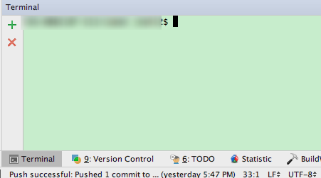
Prerequisites
- After setting up your Squirrel environment, you should have already updated the IntelliJ terminal to utilize the bash shell. For instructions on how to do this, consult the Change IntelliJ Terminal section of Setting Up Squirrel in IntelliJ for assistance.
Git Configuration

Use the git config command to work with your settings stored as follows:
Git stores and sets configurations at various levels (each subsequent level overrides the previous level):
| Level | Location | Contents | Command to set scope |
|---|---|---|---|
| System | /etc/gitconfig | Configurations for every user and all repositories | git config --system |
| User | ~/.gitconfig | Configurations specific to user | git config --global |
| Repository | .git/config | Configuration specific to that single repository | git config |
Verify that user.name and user.email have been set in your global configuration by IntelliJ by executing the following command in your terminal:
$ git config --list
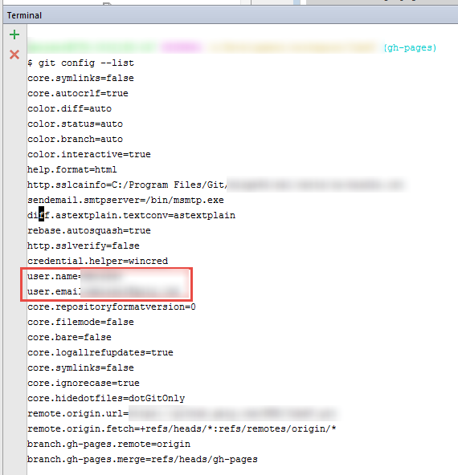
Use git config --global user.name <Name> and
git config --global user.email <email> to set them if they haven't been set:
$ git config --global user.name "Joe Squirrel"
$ git config --global user.email jSquirrel@squirrelworks.com
Aliases
Aliases provide a way to shorthand commands in the CLI.
Place any desired aliases in the [alias] section of your {HOME_DIRECTORY}/.gitconfig file.
Although you'll likely spend most of your time in IntelliJ, some of the aliases below may be useful tools for you. For more detail, checkout: http://durdn.com/blog/2012/11/22/must-have-git-aliases-advanced-examples/.
Basic Commands
cp = cherry-pick
st = status -s
cl = clone
cm = git commit -m
co = checkout
br = branch
diff = diff –word-diff
dc = diff –cached
fall = fetch -all
logtree = log -graph -oneline -decorate -all
Reset Commands
r = reset
r1 = reset HEAD^
r2 = reset HEAD^^
rh = reset –hard
rh1 = reset HEAD^ –hard
rh2 = reset HEAD^^ –hard
Stash Commands
sl = stash list
sa = stash apply
ss = stash save
Log List Commands
ls = log –pretty=format:"%C(yellow)%h%Cred%d\ %Creset%s%Cblue\ [%cn]" –decorate
ll = log –pretty=format:"%C(yellow)%h%Cred%d\ %Creset%s%Cblue\ [%cn]" –decorate –numstat
lnc = log –pretty=format:"%h\ %s\ [%cn]"
lds = log –pretty=format:"%C(yellow)%h\ %ad%Cred%d\ %Creset%s%Cblue\ [%cn]" –decorate –date=short
ld = log –pretty=format:"%C(yellow)%h\ %ad%Cred%d\ %Creset%s%Cblue\ [%cn]" –decorate –date=relative
le = log –oneline –decorate
filelog = log -u
Finding Files and Content
fl = log -u
dl = "!git ll -1"
dlc = diff –cached HEAD^
dr = "!f() { git diff "$1"^.."$1"; }; f"
lc = "!f() { git ll "$1"^.."$1"; }; f"
diffr = "!f() { git diff "$1"^.."$1"; }; f"
grep = grep -Ii
gr = grep -Ii
la = "!git config -l | grep alias | cut -c 7-"
done = "!f() { git branch | grep "$1" | cut -c 3- | grep -v done | xargs -I{} git branch -m {} done-{}; }; f"
Git Command Line Interface (CLI)
For our work here, we will utilize the Git CLI, through the use of the git command.
You will utilize the git command for everything you do.
For more information, type git --help or man git
Create a Repository
-
Go to your GitHub page: https://github.com/yourUserName
-
Go to the Repositories tab
-
Click on the new button and provide the basic information:
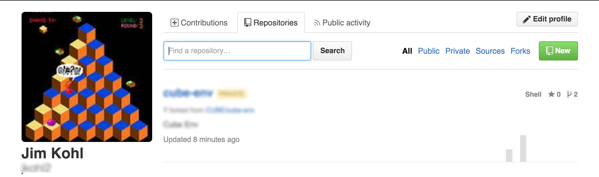
TODO: MM I think something is missing here…there isn't any command listed
Clone
Use git clone https://github.com/yourUserName/yourRepository to clone a copy of the repository onto your local machine
$ git clone https://github.com/zippyzsquirrel/squirrel-u
Create 'origin' and 'upstream' Links
To create an 'origin' link, use git remote add origin https://github.com/yourUserName/yourRepository
To create an 'upstream' link, use git remote add upstream https://github.com/yourUserName/yourRepository
$ git remote add origin https://github.com/jusr/squirrel-u
$ git remote add upstream https://github.com/jusr/squirrel-u
To verify remotes have been correctly created:
$ git remote show origin
$ git remote show upstream
You should see your repository in the Fetch and Push URLs:
Fetch URL: https://github.com/yourUserName/yourRepository.git Push URL: https://github.com/yourUserName/yourRepository.git
If you make a mistake, you can easily remove these remotes and redo the above steps with:
$ git remote remove origin
$ git remote remove upstream
View Repository Status
You can view current status of your repositories by using this command:
$ git status
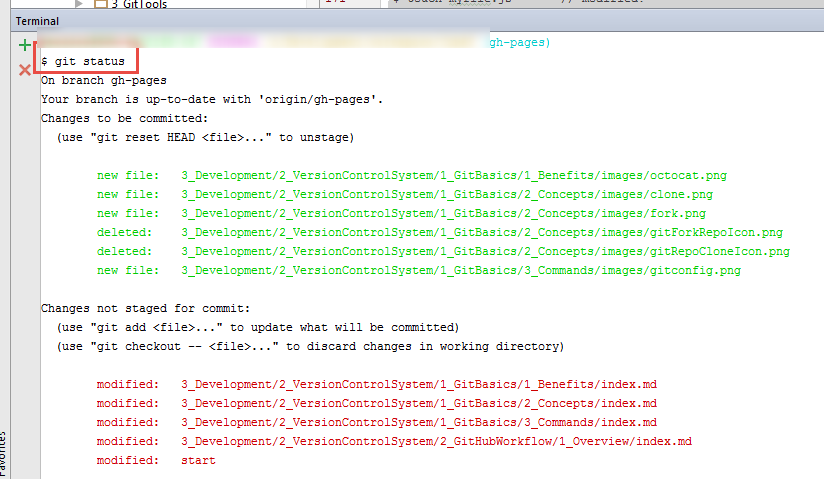
Modify, Add, Commit
Using the git status command, we can see the files that have been modified, but are not staged for commit:
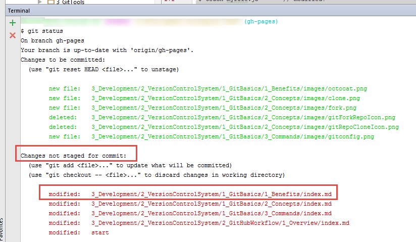
Stage a modified file with the git add <filename> command
$ touch myfile.js
$ git add myfile.js
Comparing the image above to the example below, you can see that the file in the ```git add`` command has been moved from the Changes not staged for commit (modified files) section to the Changes to be committed (staged) section
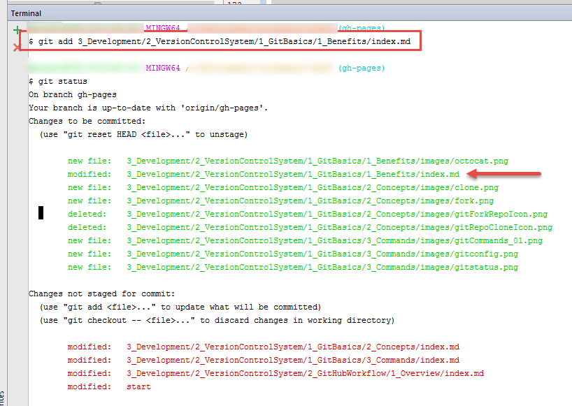
Commit a staged file with the git commit -m "message text" <filename> command
$ git commit -m "updating something" myfile.js
You can see after the commit via git status that your branch is now one
commit ahead of origin (remember that the commit command only moves files from the Staging Area to the .git Directory, it does NOT have any affect on the repositories living in GitHub).
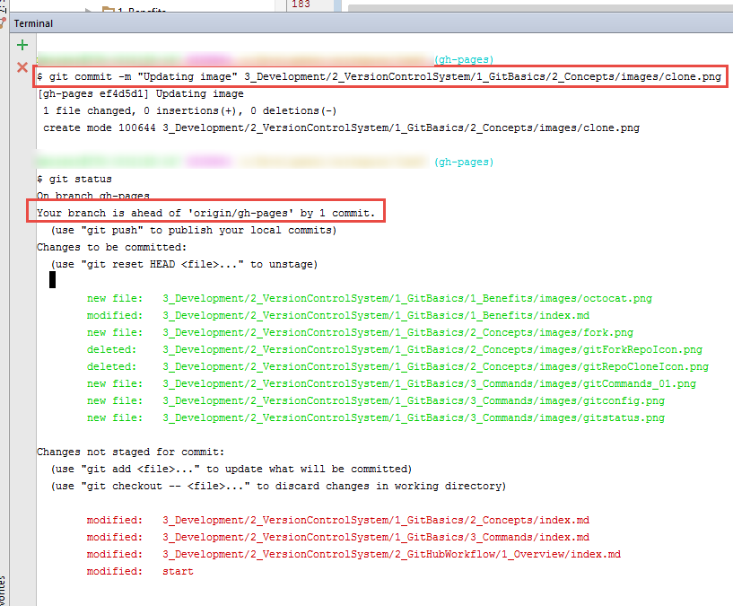
If you don't see any benefit from using the staging step, you can combine add and
commit steps with git commit -a <file>.
$ git commit -a myfile.js
IntelliJ sidenote: In IntelliJ, the add and commit steps are combined. However, you can always use the CLI as an alternative if you need the separate functionality.
Reset
On occasion, you will want to undo files that you've committed, but not pushed. This is done via reset.
There are several options for reset, which determine what happens to files after they are reset. All reset modes reset the HEAD to
- soft Leaves all your changed files as "Changes to be committed". Doesn't
touch the working directory tree or index file (staging area). See "Squashing
Commits" below. - hard Any changes to tracked files in the working tree since
are discarded. Resets the index and working tree. - mixed (default) the changed files are preserved but not marked for commit. Resets the index but not the working tree and reports what has not been updated.
- merge keeps files which are different between the index and working tree (i.e. which have changes which have not been added).
Resets the index and updates the files in the working tree that are different
betweenand HEAD. If a file that is different between and the index has unstaged changes, reset is aborted. - keep Resets index entries and updates files in the working tree that are different between
and HEAD. If a file that is different between and HEAD has local changes, reset is aborted.
Reset can be beneficial for undoing a bad commit. It is recommended in this case to use a git reset -hard
Another alternative for altering the history of a bad commit is amend.
shell git commit --amend
Lets you combine staged changes with the previous commit instead of committing it
as an entirely new snapshot.
Squashing Commits Squashing is the technique of taking prior multiple commits and undoing them into your staging area so that when you push your code to your Fork, you are only making one commit history.
This can be beneficial if you are in the habit of incrementally committing changes and then doing one big push later on. To accomplish this, you would use the soft reset option.
The downside of squashing commits is that you lose your history of all your prior commits, which may be beneficial for isolating problems.
Push Changes to Your Public Fork
$ git push {remote}
Now verify that your changes have made it to github.com/userName fork.
Fetch, Merge, Pull
It is important to stay current with any upstream changes from members of your team.
To do so, you can use git fetch to import commits from a remote repository
into your local repo. These commits are stored as remote branches, giving you the
opportunity to review changes before integrating them into your copy of the
projects.
$ git fetch
Then, use git merge to merge these changes into your local repository.
$ git merge
Alternatively, you can complete both fetch and merge in a single git pull <remote> <branch> command
$ git pull upstream master
Create Branch
Branches are one way to organize multiple sets of work. By creating alternate branches from the master branch and making commits to them, you can switch between work streams and those changes will be preserved on the branch. Branches can also be useful for gathering work that you may want to share in a Pull Request with another user.
git checkout -b <new-branch> creates a new branch with the name you specify
and makes that branch the current branch.
In the following example, we are creating new branch called "myfeature" and modifying a file (junk) within that branch. Then, we are committing that change with a message of "test2"
$ git checkout -b myfeature // creates new myfeature branch
$ touch junk
$ git commit -a -m "test2" junk
Delete Branch
Make sure you are not currently on the branch you would like to delete, otherwise you will get an error.
git branch -d <branch-name> deletes the specified branch name
In the following example, we are deleting a branch called "myfeature"
$ git branch -d myfeature // deletes myfeature branch
Switch Branch and Merge
Use git checkout <existing-branch> to switch to a specified branch.
In the example below, we are switching to the "master" branch and merging changes
from the "myfeature" branch. As always, we can get the status of our repositories
with git status to verify changes.
$ git checkout master // switch back to master branch
$ git merge myfeature // take commits into master branch
$ git status // verify changes
$ git merge featureA —no-ff // no fast forward
$ git branch -D featureA
$ git push origin :featureA
Rebasing
An alternative to merge is to rebase, which basically replays all the history changes onto your branch.
For more detail: http://www.git-scm.com/book/en/v2/Git-Branching-Rebasing
Stashing
Stashing takes the dirty state of any modified tracked files and staged changes of your working directory and saves it on a stack of unfinished changes that you can reapply at any time.
$ git stash // push your modified and staged changes onto the stash stack
$ git status // your changes are gone
$ git stash list // view your stashes
$ git stash apply // reapply from stash
$ git status // your changes are back
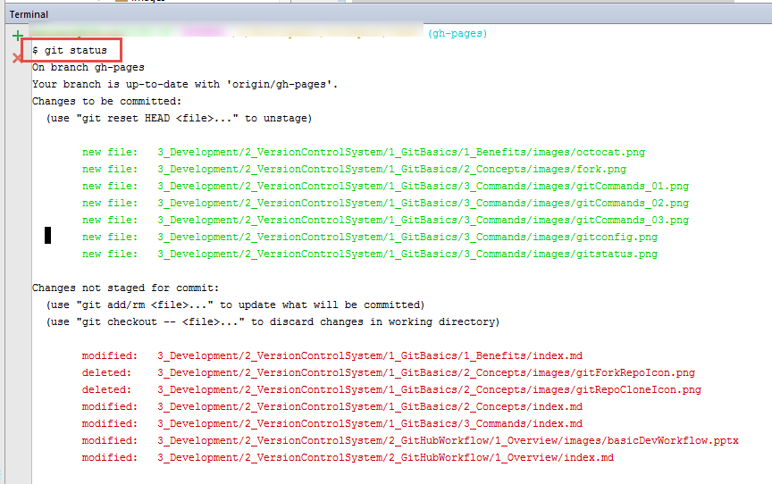
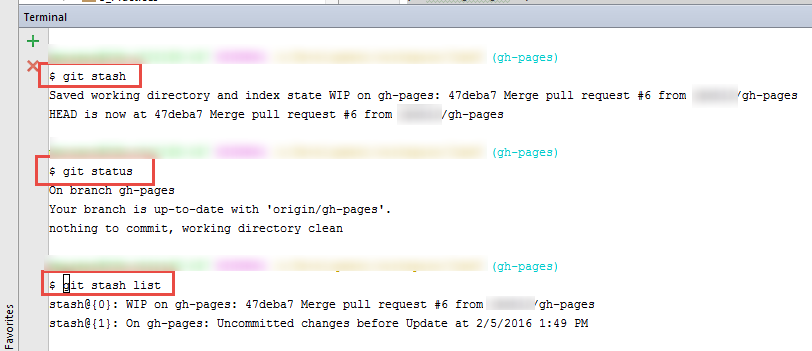
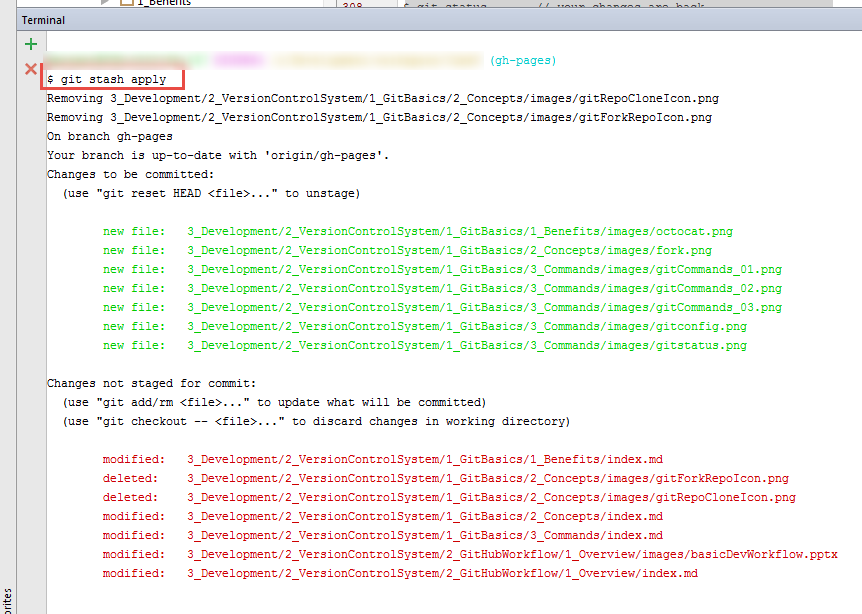
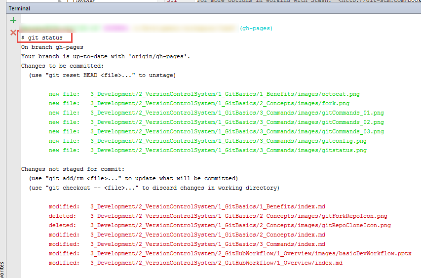
For more options in working with Stash: http://git-scm.com/book/en/v1/Git-Tools-Stashing
Setting Up Remote Branches
If you'd like to track a remote branch:
$ git branch --set-upstream-to master origin/master
$ git checkout -b abc --track upstream/master
Ignore Whitespace in Merges
$ git merge -Xignore-space-change whitespace
Set Tracked Files to Not Be Committed
Mark files that are tracked to be ignored so that changes won't be committed using git update-index --assume-unchanged <file>
$ git update-index --assume-unchanged config/database.yml
You can unmark the file as ignored with git update-index --no-assume-unchanged <file>
$ git update-index --no-assume-unchanged config/database.yml
Notifications - Web or Email
By specifying another user who wasn't in the original pull request with an @user mention, they will from that point be included in the pull request chain and any notifications. They can unsubscribe from that Pull Request if they'd like to.
For Further Reading
- Aliases
- GitHub magic - not for sale yet
- Go to github.com, setup a public account and start your own projects!
- [Pro Git book, Chacon & Straub] (https://git-scm.com/book/en/v2)
- Basic Git commands
- Your Terminal application